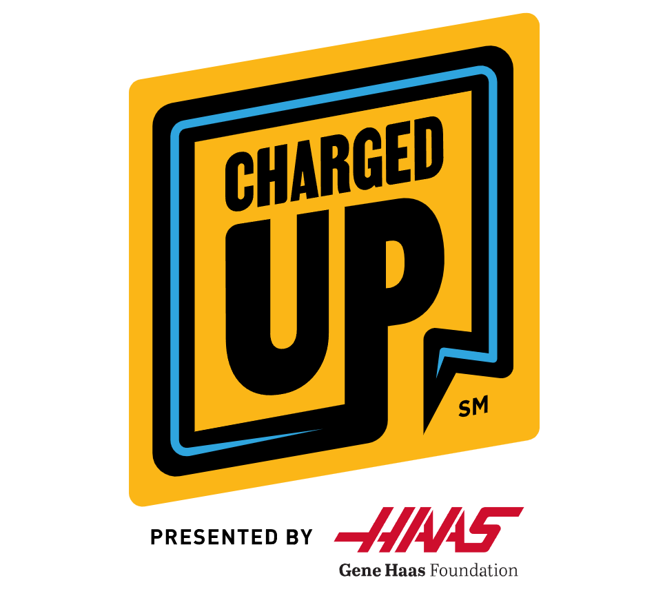

2022 - 2023

2021 - 2022
2019 - 2020
2018 - 2019

Premio que celebra al equipo con la mayor trayectoria e impacto durante un periodo sostenible.
Premio que celebra al equipo con el mayor espíritu emprendedor, no solo en patrocinadores sino también en colaboraciones para proyectos.
Premio que celebra al equipo que haya demostrado mejor difusión de ciencia y tecnología durante una temporada.
Premio que busca reconocer el liderazgo y dedicación de los estudiantes más destacados de FIRST, guiando a su equipo y comunidad a conocer FIRST y su misión.
Premio que celebra al equipo que demuestra principios de diseño industrial, encontrando un balance entre forma, función y estética.
Premio que celebra el espíritu de equipo y unión entre los miembros.
Premio que celebra al equipo novato que difunda ciencia y tecnología en la comunidad y demuestre gran potencial para temporadas subsecuentes.
Premio otorgado al equipo que demustre compromiso con la seguridad tanto en la competencia como fuera de ella e inspiran a otros equipos a vivir la cultura de seguridad.
Premio que celebra al equipo que ha demostrado un robot consistente, confiable y de alto rendimiento al realizar las tareas del periodo autónomo.
Premio que celebra una destacada demostración de los FIRST Core Values como Gracious Professionalism y trabajo en equipo dentro y fuera de la cancha.